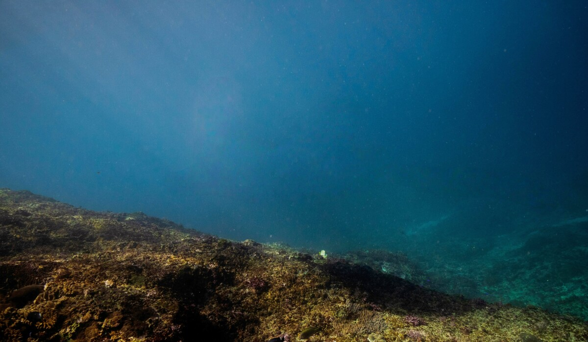
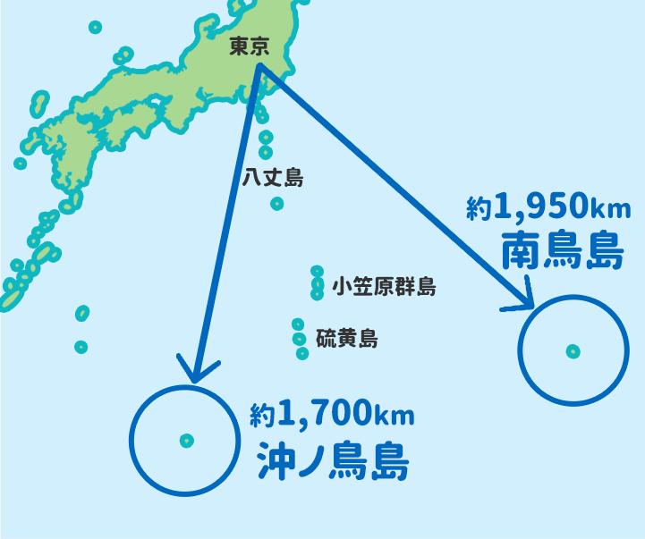

「ニュースで南鳥島のレアアースって見たけど、正直よく分からん…」「そもそもレアアースって何？私に関係あるの？」——そんな人、多いはず。
実はこれ、"日本がガチで資源大国になるかも"というレベルの重要ニュースなんです。この記事を読めば、①レアアースって何？ ②南鳥島の何がすごい？ ③スマホや日本の未来はどう変わる？が3分でスッキリ分かります。読み終わる頃には、友達に「ねぇ知ってる？」と話したくなっているはずです。
南鳥島の海底に、世界3位級のレアアースが眠っている
- 南鳥島沖に約1,600万トン（世界3位級）のレアアース泥。EVに必須の希少な"重希土類"が豊富
- 2026年、深海6,000mから試験採取に成功。2028年以降の商用化を目指す
- スマホはすぐには安くならないが、価格が中国の一存で急騰するリスクを減らせる可能性
そもそも「レアアース」って何？スマホの中の"隠れ主役"
レアアース＝ハイテク製品に必須の"ちょっと特別な金属"の総称（17種類）。名前は地味ですが、実はあなたの生活のド真ん中にいます。
つまり「レアアースがないと、今の便利な生活は成り立たない」。なのに産出は特定の国に偏っている——ここが今回のニュースの肝です。
南鳥島の海底に「世界3位」の宝の山があった
日本最東端の南鳥島（東京都・小笠原村）。その周辺の深海底に、レアアースを含む泥＝「レアアース泥」が眠っています。

| ポイント | 内容 |
|---|---|
| 埋蔵量 | 有望海域に約1,600万トン（世界3位級） |
| 特徴 | EV磁石に必須の"重希土類"が豊富（世界的に希少） |
| 発見 | 2013年、東京大学・加藤泰浩教授らが報告 |
| 場所 | 日本のEEZ（排他的経済水域）内 |
しかも日本のEEZ内。つまり"日本の庭"に世界級の資源があった、という話です。
【2026最新】深海6000mから採取成功！今後のロードマップ
長年"宝の持ち腐れ"でしたが、2026年、状況が動きました。
- ✅ 2026年2月：水深6,000mからレアアース泥の試験採取に成功（世界初の連続回収）→清水港へ陸揚げ
- 🔜 2027年：1日350トン規模の本格掘削実証
- 🎯 2028年以降：商用化を目標（政府が1,000億円超を投じる）
JAMSTEC（海洋研究開発機構）プレスリリース／時事通信（2026年7月時点）
資源・経済安全保障についてもっと深掘りしたい方は、関連書籍を探してみるのもおすすめです。
「日本が資源大国」になると、何が変わる？
最大の意味は「経済安全保障」。今はレアアースの精錬の約9割を中国が握っているため、輸出を絞られると日本の製造業が止まりかねません。
| 中国 | 日本（南鳥島が実現すれば） | |
|---|---|---|
| 現状の立場 | 生産6割・精錬9割を独占 | ほぼ輸入頼み |
| 今後の可能性 | — | 国産供給で依存を軽減 |
つまり南鳥島は「他国に振り回されない日本」への切り札になり得ます。
【正直に解説】で、結局スマホは安くなるの？
一番知りたいのはココですよね。正直に言うと——「すぐには安くなりません」。でも意味は大きい、という話です。
- ❌ 明日・来年に値下げ、はない：商用化は2028年以降。量産と採算はこれから
- ⭕ 長期的にはプラス：供給が安定すれば、価格の乱高下（急騰）を防ぐ効果が期待できる
期待しすぎると肩透かしですが、「価格が中国の一存で跳ね上がるリスクを減らす」——これがリアルな恩恵です。
なぜ"今まで"採らなかったの？
答えは「深すぎて採算が合わなかった」から。水深6,000mの泥をコスト内で回収する技術が、ようやく現実味を帯びてきた段階です。
公式が言わない「本当の壁」＝精錬
実は採るより"精錬（使える形にする）"が難関。ここでも中国が9割の技術・設備を握るため、「採れた＝すぐ使える」ではない。ニュースが報じにくいこの一点こそ、冷静に見るべきポイントです。
こうした経済ニュースの続報を効率よく追いたいなら、耳で学べるサービスも便利です。
もっと深く知りたい人へ｜おすすめの学び方
「友達に語れるレベルまで理解したい」人向けに、ニュースを"点"でなく"線"で追う方法を。
- 📚 書籍：資源・経済安全保障の入門書で背景をまとめて理解
- 🎧 耳学習：通勤・作業中に続報を追える音声サービスも便利
よくある質問（FAQ）
すぐには安くなりません。商用化は2028年以降を目標としており、量産・採算化はこれからです。供給が安定すれば、価格の急騰リスクを抑える効果は期待できます。
有望海域に約1,600万トンが確認されており、世界3位級とされます。EV用磁石に必須の重希土類（ジスプロシウムなど）が豊富な点が特徴です。
水深6,000m前後の深海底にあり、採算が取れるコストで回収する技術が確立していなかったためです。2026年に試験採取に成功し、実用化に向けた検証が進んでいます。
いいえ。採取した泥からレアアースを取り出す「精錬」の技術・設備が別途必要で、その分野は中国が世界の約9割を握っています。採取成功は実用化までの一歩です。
まとめ｜日本の海で、静かに始まった"資源の逆転劇"
- レアアース＝スマホ・EVに必須の"隠れ主役"。今は中国が精錬9割を独占
- 南鳥島の海底に世界3位級（1600万トン）、しかも希少な重希土類が豊富
- 2026年に深海6000mから採取成功→2028年以降の商用化へ
- スマホはすぐ安くならないが、"価格と供給の安定"という安心は大きい
日本の海の底で、静かに"未来の主導権"をめぐる勝負が始まっています。ニュースの続報を、ぜひ一緒に追いかけましょう。